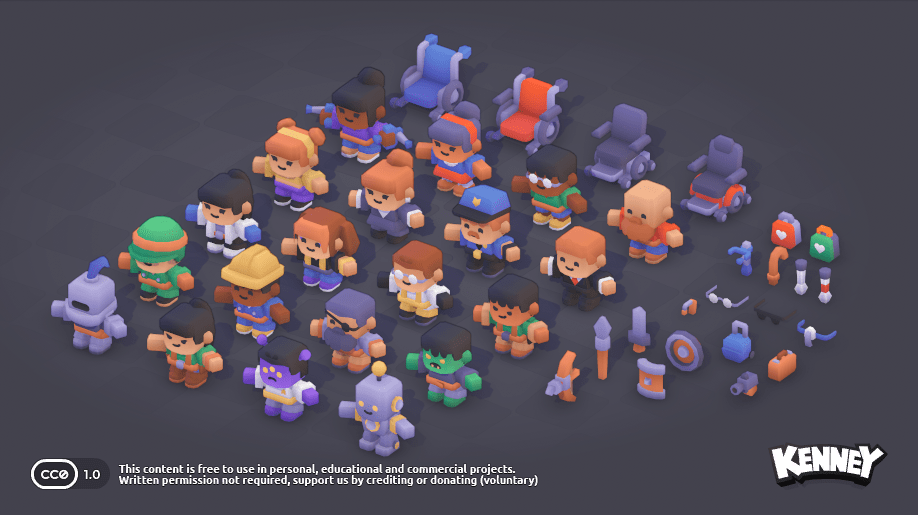
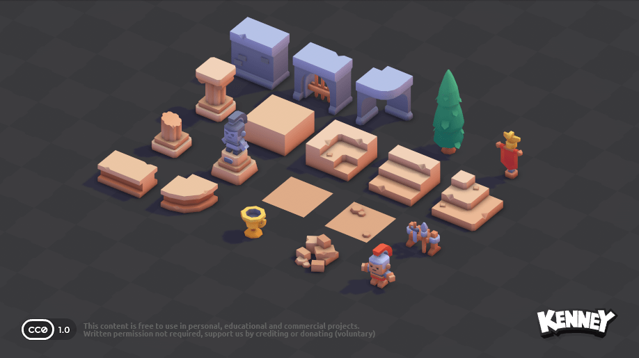
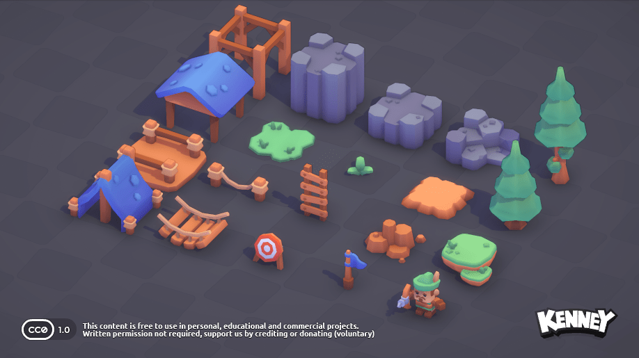
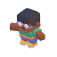
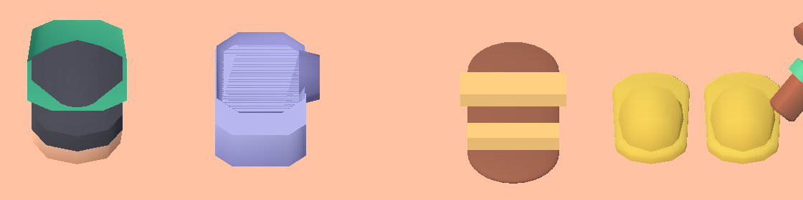
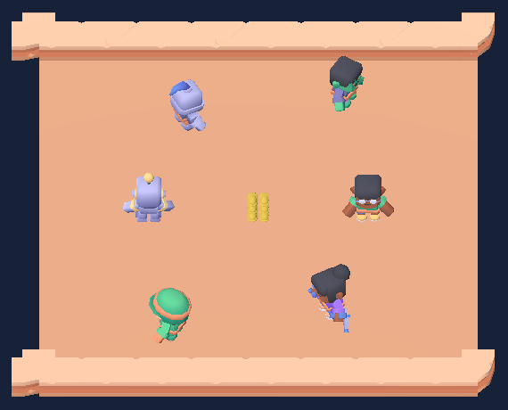
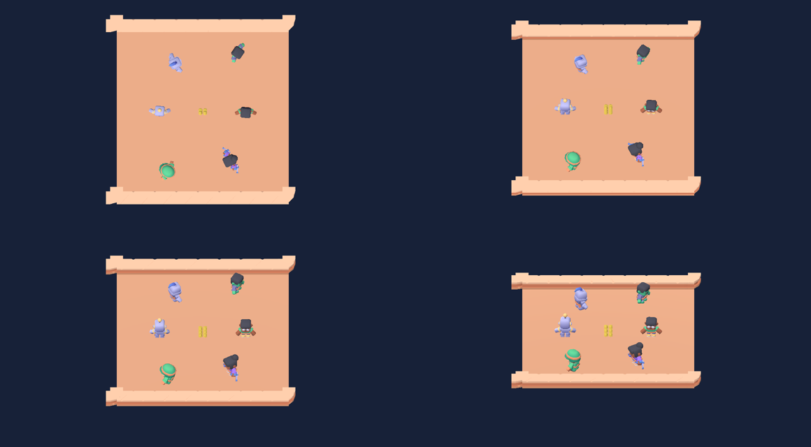

Baling Selipar - 3D assets
What the three Kenney packs give us, what is missing, and how to show 3D art on top of the 2D physics. No game code changed. Annotate any claim you doubt.
The answer
- Use the packs: characters, arena and scenery. All three are CC0.
- Build the sandal from primitives. No pack has one. A flat sole and two straps read as a sandal. The character's own foot does not.
- Integration: one shared SubViewport with an angled orthographic camera, built after the 2D game is stable. Keep pre-rendered sprites as the fallback.
- Problem to fix first: the Kenney floor is light peach. Blue measures 1.09:1 on it and red 1.69:1. The floor must go dark or team colour fails.
- Cost of 3D, measured: about 2.2 times the frame time of the 2D build in headless Chrome. One shadowed light doubles it again. This is not a phone number.
The three packs



Each pack has its own 512 by 512 colormap, so models from different packs cannot share a texture. The GLB files total 5.5 MB, 540 KB and 860 KB.
What maps to our game
| Game part | Asset | Triangles | Fit |
|---|---|---|---|
| Attackers and defenders | character-* (20 models) | 686 to 947 | fits 7 joints, 32 clips |
| Arena floor | floor and floor-detail | 2 and 50 | recolour peach fails contrast |
| Arena edge | border-straight and border-corner | 60 and 122 | fits |
| Stack plinth | block (or column) | 12 (168) | fits |
| Match end reward | trophy | 244 | fits |
| Scenery outside the field | forest tree, rocks-*, fence, flag, patch-grass | 108 to 342 | fits |
| Sandal | none in any pack | - | gap |
| Ball-like throwable | none. The sandal is the throwable. | - | gap |

The gap: a sandal
I tested four ways. The picture shows, left to right, the cut foot of soldier and robot, a primitive sandal, and the CC0 slippers. The male-a foot is measured but not in the picture.

| Rank | Option | Triangles | Licence | Reads as a sandal |
|---|---|---|---|---|
| 1 | Primitive: flat sole plus two strap boxes | 96 + 24 | none | yes |
| 2 | Slippers by Isa Lousberg | 360 | CC0 | a slipper |
| 3 | Sandal by jeremy, Slippers by J-Toastie, Flip flops by Poly by Google | 388 to 2032 | CC BY, credit needed | not rendered |
| 4 | Cut the character's foot | 54 to 78 | CC0 | no blunt stump, open at the cut |
The sole brown (144,87,65) and strap tan (230,185,110) come from the characters' own colormap. A flat colour of the same value matches the style. The scratch test used a capsule with 3456 triangles. A 16-sided cylinder sole costs 96.
How to show 3D on 2D physics
A. Shared SubViewport recommended
Hours: 14 to 20 (estimate). Swap contract: kept. A 2D proxy copies each body transform. Touch and HUD: unchanged. Risk: aim line and rings must go through the camera projection.
B. Full 3D scene
Hours: 30 or more. Swap contract: broken. Touch: needs a ray cast. Risk: highest.
C. Pre-rendered sprites fallback
Hours: 10 to 16 plus a render per skin. Swap contract: kept. Touch and HUD: unchanged. Risk: 8 facing directions per clip, big atlases.
All hours are my estimates and are unconfirmed.
What 3D costs, measured
Scratch scene: animated Kenney characters, arena floor and border and 3 slippers in an orthographic SubViewport at 50 degrees. Headless Chrome, software GL, 844 by 390, three repeat runs. The machine was busy (load 15 to 21), so read the ratio, not the milliseconds.
| Build | Mean frame | p95 | Draw calls | Primitives |
|---|---|---|---|---|
| 2D baseline, 6 shapes | 16.6 ms | 16.8 ms | 7 | - |
| Real 2D game | 16.6 ms | 16.8 ms | - | - |
| 3D, 6 characters | 35 to 39 ms | 50 ms | 38 | 7529 |
| 3D, 12 characters | 43 to 44 ms | 50 ms | 50 | 12541 |
| 3D, 6 characters, one shadowed light | 75 to 78 ms | 83 ms | 74 | 11366 |
16.6 ms is the display refresh cap, so the real 2D cost is lower and the 3D ratio is a lower bound. The pck grows by 0.7 MB. The 37.7 MB wasm is identical in both builds and dominates the load. A phone test is required before anyone commits to 3D.

Camera angle

| Pitch | View | Verdict |
|---|---|---|
| 90 degrees | Only heads and shoulders. Animation barely reads. | worst |
| 65 degrees | Faces show. The field still reads as a field. | good |
| 50 degrees | Full figures, clear faces, border and floor read well. | best |
| 35 degrees | Models look best, but they hide each other and the far side shrinks. | too flat |
Below 90 degrees the ground axis away from the camera shrinks by sin(pitch), 0.77 at 50 degrees. A 2D circle becomes an ellipse on screen. Aim line, target ring, throw ring and orbit ring must go through Camera3D.unproject_position, or be drawn in the 3D world. This is the main extra cost of approach A.
Team colour on models that keep their palette
Contrast of team colours on the floor
| Floor | Blue #40bfff | Red #ff5230 |
|---|---|---|
| Current navy | 7.71:1 | 4.96:1 |
| Kenney peach | 1.09:1 | 1.69:1 |
Under red-green colour blindness (Machado simulation) blue and red differ by 2.42:1 in luminance for protanopia and 1.21:1 for deuteranopia on navy. Red on navy falls to 3.49:1 under protanopia. Shape must carry the team there, as it does today.
Options
| Option | Verdict |
|---|---|
| Disc under each character, circle for attackers, square for defenders | pick works with any outfit, 1 draw call |
| Rim or outline shader | no fights the outfit, 2 passes |
| Coloured armband mesh | no bone attachment per model, tiny |
| material_overlay tint | no muddies the palette |
Characters that clash least
Share of each model's surface that uses blue or red colormap cells (rough heuristic). Low is good.
| Model | Blue | Red | Use |
|---|---|---|---|
| male-e | 0.5% | 5.4% | yes |
| female-e | 7.3% | 0.5% | yes |
| raider | 3.7% | 17.7% | yes |
| zombie | 9.2% | 9.1% | yes |
| knight, robot, alien | 39 to 46% | 0 to 12% | avoid |
| female-c, male-b, male-f | 0 to 24% | 43 to 47% | avoid |
Animation map
| Visual state | Kenney clip | Length |
|---|---|---|
idle | idle, loop | 1.33 s |
run | walk and sprint, blend by speed | 0.67 and 0.50 s |
carry | holding-right or holding-both, a pose | 0.17 s |
throw | holding-right-shoot or attack-melee-right | 0.20 or 0.42 s |
dash | sprint at faster speed | 0.50 s |
die | die, hold the last frame | 0.33 s |
hit | fall or crouch | 0.33 or 0.17 s |
| kick away | attack-kick-right | 0.53 s |
| pick up | pick-up | 0.33 s |
The skeleton has 7 joints, which keeps skinning cheap. Keep each pack in its own folder with its own colormap file, so the importer stores one texture per pack.
Decisions
Licences and credits
| Source | Licence | Credit line |
|---|---|---|
| Kenney Mini Characters, Mini Arena, Mini Forest | CC0 | None needed. Optional: Kenney (www.kenney.nl). |
| Primitive sandal | none | None |
| Slippers by Isa Lousberg, poly.pizza | CC0 | None needed. Log the row in ASSETS.md. |
| jeremy, J-Toastie, Poly by Google (poly.pizza) | CC BY (3.0, version unconfirmed) | "title" by author, poly.pizza link, licensed under CC BY 3.0. |
Unconfirmed
- Frame rate of 3D on a real Android phone.
- Whether Kenney's other 3D packs hold a sandal. I read only page 1 of 14 of the catalogue.
- The CC BY version number and the look of the jeremy and J-Toastie models.
- Every hour estimate.
- Whether the glTF importer sets loop flags on Kenney clips.
- The blue and red clothing shares. The heuristic depends on how I classified colormap cells.